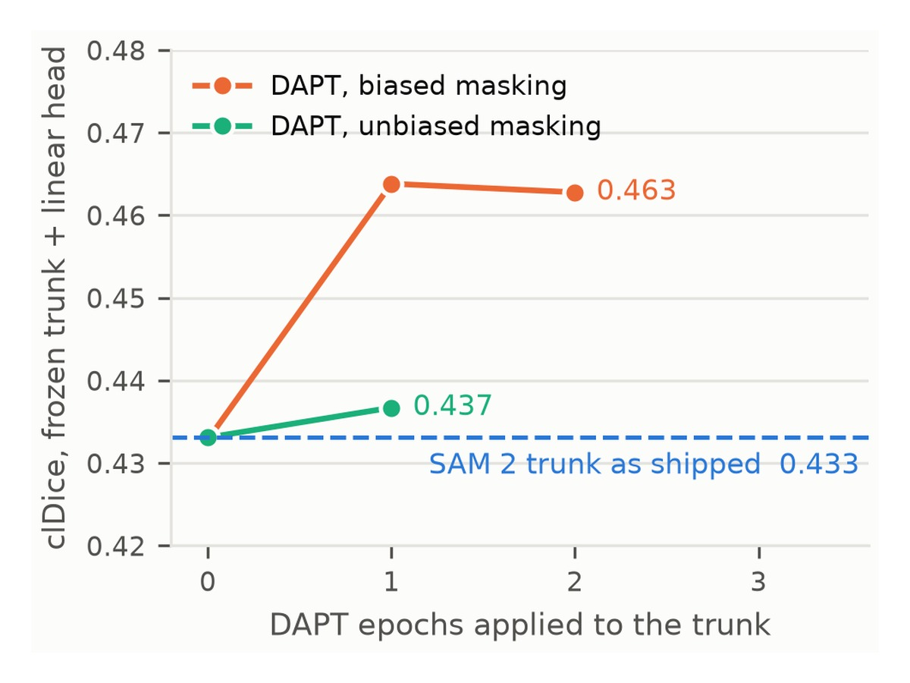
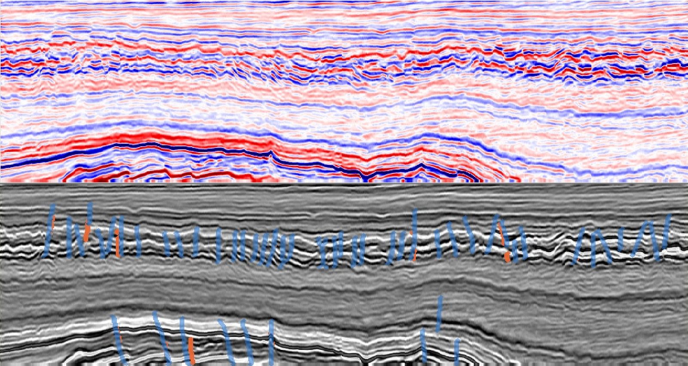

Projects
Ongoing research projects. Each has a results site or repository you can open for the full detail.
Solar filament segmentation with foundation models
Benchmark · results online · 2026Can a vision foundation model pretrained on everyday photographs segment thin, faint filaments on the Sun better than a CNN trained from scratch — and how much of the encoder has to change? A controlled benchmark on 958 GONG H-alpha full-disk images (MAGFiLO annotations): every arm changes exactly one thing, 5 folds × 3 seeds, scored on pixel, skeleton and object-level metrics.
Result: a SAM 2 encoder with 0.43 % of its weights adapted (LoRA) reaches Dice 0.63 — above full fine-tuning of the same encoder (0.60) and a from-scratch U-Net (0.62). The decoder matters more than the backbone; full fine-tuning overfits on ~650 training images.


Self-supervised pretraining on unlabeled H-alpha
In progress · 2026A masked-image-modelling stage (SimMIM-style) on the SAM 2 Hiera encoder over 106,871 unlabeled GONG H-alpha frames, run before the LoRA fine-tune above and evaluated on the same 5 folds — so the delta isolates the pretraining. Includes the corpus selection, quality gate and CPU preprocessing pipeline for the unlabeled archive.
{kind=link}

Does a solar-adapted encoder transfer to seismic faults?
In progress · 2026A DINOv3 encoder LoRA-adapted to solar filaments is compared with the raw DINOv3 encoder as the initialisation for seismic fault segmentation — another thin, curvilinear target in a very different domain. Three arms identical in every hyperparameter except the initialisation; trained on FaultSeg3D synthetic slices, evaluated on held-out volumes and zero-shot on real-world CRACKS field sections.
{kind=link}
